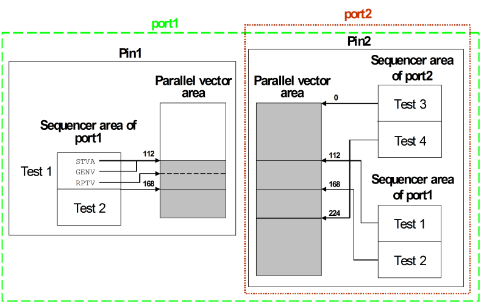

From global to port specific vector areas: Migration and compatibility
In previous releases of SmarTest, every pin has one vector area which contains the physical waveform DC/DC power units for the patterns (labels) of all ports to which the pin belongs. Starting from release 7.0, every port has its own port specific vector area on every pin that belongs to it. Accordingly, the addresses of the STVA instructions, which specify the start of the vectors for the respective pattern, refer to the specific area of the respective pattern port. One advantage of these port specific vector areas is that the memory can be used much more efficiently when different ports have a pin in common.
This is in contrast to the global vector area where the physical location of the vector data is determined by the order in which the patterns are created. Since the start address of the vectors must be the same for all pins within the same port, the vectors of any new pattern are appended at the address that corresponds to the end of the largest vector area among the pins that belong to the pattern port. If these pins have vector areas of different length, this produces "holes" in the memory, that is, unused memory segments not necessitated by padding. The following figure illustrates how such unused memory segments could be generated with the example setup in Sequencer areas and vector areas when the vector area is global:

In this example, the patterns were created in the order Test 3, Test 1, Test 2, Test 4. When Test 1 is created, the largest vector area among the pins of port1 is that of Pin2, which already contains 112 vectors. Consequently, the start segment 0 through 111 of the vector area for Pin1 must be left empty.
In fact such holes are sometimes created even if the vector areas of the pattern port pins all have the same length, but another pin has a larger vector area. Such the risk of such a waste of memory space is greatly reduced by the new vector area layout.
Note that the new layout becomes visible in the vector setup file only if
- patterns exist for different ports, and
- the vector setup is stored in a single setup file (in contrast to a pattern master file setup).
If a pattern master file is used, every pattern is stored in a separate file, and its VECD or VECC commands specify only the vectors for this pattern. Thus these commands can be combined into a port specific vector area as well as into a global one.
At the same time, SmarTest 7.x is still able to load a multi-port setup that uses the old global vector area. However, it converts such a setup into its own native format. In particular, it divides the global vector area into port specific vector areas by analyzing the addresses of the STVA instructions. Accordingly, queries concerning the vector areas of the currently loaded setup must be issued, and are answered, in the new format.
In order to be able to distinguish both vector area types, SmarTest must be told how the addresses of the STVA instructions (SQPG command) are to be interpreted, globally or locally. This information is given by the position of the address. A global address is specified in param_1, a port specific one in param_2 of the STVA instruction. In both cases the other parameter must be omitted. Note that SmarTest stores and displays the address in param_2 only if the above two conditions concerning the new layout are fulfilled. In all other cases it uses param_1.
The other firmware commands that are affected by the port specific vector area layout are
- VECD(?), VECC(?)
- GETA?
- DMAS(?)
For details see the respective command descriptions.
Migration and compatibility
The new multi-port format is not backward compatible. Single setup files that contain patterns for more than one port cannot be loaded with an earlier SmarTest release after they have been saved on a 7.x release.
If backward compatibility is required, it is recommended to convert a single setup file in the old format into a pattern master file setup. The format of the pattern master file setups did not change.
Furthermore, if a single setup file is necessary to reduce the download times (which can be longer with a pattern master file, see The pattern master file), compatibility could theoretically be preserved by using a setup file in the old format on both system types. However, this is not advisable, since loading a single setup file in the old format with a 7.x system takes considerably longer than loading a file in the new format. Rather, you should use a pattern master file setup as a single source and create two single setup files from it, one for older releases, and one for 7.x.
Functional changes
- Introduced in SmarTest 7.0.1